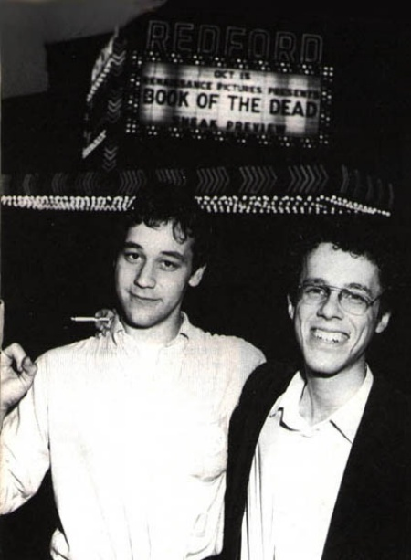

Samuel M. Raimi nació en Franklin, Michigan, el 23 de Octubre de 1959. Raimi vivía con sus cuatro hermanos en este somnoliento suburbio de Detroit, por lo que su infancia fue muy tranquila. Su mayor afición era jugar al béisbol con sus amigos y leer tebeos de Spider-Man. Además, al igual que sus hermanos Ivan y Ted, era un fiel admirador de un trío de humoristas "Los Tres Chiflados", caracterizados por el disparate surrealista de sus guiones y el nivel casi improvisado de sus rodajes. A los 13 años, se compró su primera cámara de 8mm con el dinero ganado con sus trabajos de jardinero en las casas de la zona donde vivía. Conviene añadir que el grupo de cinéfilos que forman los tres Raimi se va incrementando a medida que éstos crecen. Estudiando en la Birmingham Groves High School, conocen al futuro actor Bruce Campbell, que mantendrá una gran amistad con Sam y colaborará luego en la mayoría de sus trabajos.

Más adelante, cuando éste último estudia historia y literatura en la Michigan State University, entra en contacto con otro joven aficionado al cine, Robert Tapert, que sería su productor en lo sucesivo. Es más, pese a que aún carecen de contacto alguno con la industria, Tappert, Campbell y los hermanos Raimi forman la compañía Renaissance Pictures, destinada a financiar sus todavía inexistentes proyectos. Como apenas tienen dinero para rodar, a duras penas consiguen concluir un cortometraje, "Within The Woods", con el cual pretenden convencer a distintos empresarios para que inviertan capital en el largometraje que han de comenzar.
Dado que el tiempo pasa y no consiguen reunir el dinero, el padre de los Raimi, comprensivo con la vocación de sus hijos, decide aportar el dinero que falta. En 1982, el grupo de amigos rueda "Posesión infernal", y en el equipo técnico figuran dos hermanos con quienes todos ellos guardan excelentes relaciones, Joel y Ethan Coen. El resultado es una frenética película de terror, con un guión cercano a la parodia y unos movimientos de cámara extraordinariamente dinámicos, sello distintivo del cine de Sam Raimi. La producción recibe excelentes críticas en el Festival de Cannes de 1983, e incluso el escritor Stephen King alaba en público a Raimi, quien ya empieza a tener buenas relaciones con otros cineastas, como Wes Craven y John Carpenter.
En 1984, rueda "Ola de crímenes", de nuevo en colaboración con los hermanos Coen, y en 1987 dirige "Terroríficamente muertos", continuación humorística de "Posesión infernal", protagonizada esta vez por el enloquecido personaje Ashley J. Ash Williams (Bruce Campbell), obsesionado por eliminar de forma expeditiva a todos los diablos que se interponen en su camino.
Universal Pictures decide promocionar a Raimi e invierte una fuerte suma en la producción de "Darkman" (1989) donde, una vez más demuestra un gran sentido del ritmo cinematográfico, heredado de los dibujos animados, y más en concreto, del animador Tex Avery. En la tercera película sobre Ash, la maravillosa "El ejército de las tinieblas" (1992), Raimi decide homenajear a uno de sus artistas más admirados, Ray Harryhausen (creador del Stop Motion), e incluye numerosas secuencias trucadas al estilo del veterano técnico de efectos especiales. En 1993, recibe una llamada, al otro lado de la línea está John Carpenter, quien quiere rodar una producción televisiva, "Body Bags" (1993), codirigida por Tobe Hooper, y protagonizada, entre otros, por sus amigos Raimi y Wes Craven, que intervienen como actores. Por estas fechas, Sam promociona, por todos los medios posibles el cine de Hong-Kong, e incluso produce la primera película en Hollywood del cineasta chino John Woo, "Blanco humano" (1993). Asimismo, organiza el rodaje en Nueva Zelanda de dos teleseries que combinan el Peplum, las artes marciales y la comedia: "Hércules: Los viajes legendarios" y "Xena: La princesa guerrera". No llega a comenzar su siguiente proyecto en la gran pantalla, "The Damocles Network", pero sí alcanza a finalizar un western protagonizado por Sharon Stone y Leonardo Di Caprio "Rápida y mortal" (1995).
Compatibilizando televisión y cine, el director comienza a preparar en 1998 dos proyectos: "Jack Frost", con el actor George Clooney, y "Un plan sencillo", con Bill Paxton, Billy Bob Thornton y Bridget Fonda, concretando sólo este último.
Su última película en llegar a nuestro país es el thriller psicológico "Premonición" (2000), protagonizado por Keanu Reeves y la siempre notable Cate Blanchett. Y bueno, de sobra ya tienes ultrarchivada la fecha de estreno del arácnido súper héroe: mayo de 2002.
P.D.: Si ya conocías al director, te habrás dado cuenta de que ni menciono la película "Entre el amor y el juego" (1999) (no me atrevo), puesto que, presumo, todos queremos olvidarla. Incluido Sam y Kevin Costner. Sería como contaminar un currículum vitae asombroso, y claro, no estoy dispuesto a hacerlo, pero de alguna u otra forma pienso que ya lo estoy haciendo...
Filmografia
"It's Murder!" (1977)
"Clockwork" (1978)
"Within The Woods" (1978)
"Posesión infernal" (The Evil Dead) (1982)
"Ola de crímenes, Ola de risas" (Crimewaves) (1985)
"Terroríficamente muertos" (Evil Dead II) (1987)
"El ejército de las tinieblas" (Army of Darkness) (1993)
"Rapida y mortal" (The Quick and the Dead) (1995)
"Un plan sencillo" (A Simple Plan) (1998)
"Entre el amor y el juego" (For Love of the Game) (1999)